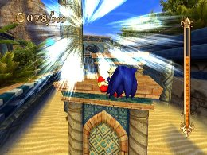
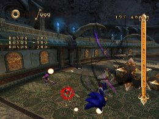

Explaining Selected Skills
Advanced Tactics
There are many skills in this game, but there are some that can be used in unique ways, have unique effects, or can become even more useful when combined with other skills.
Aegis Slider
This skill adds defensive power while sliding, and is the only skill that allows you to avoid taking damage from traps. You can be hit by spikes or flames coming from the ground as well as iron balls without taking damage.
This applies only when you are sliding, so you can combine this skill with the sliding-type skills mentioned below for even more effectiveness.
While this is a useful skill, you can take damage when you come to a complete stop after sliding, so you still need to be careful.

Splash Jump
This skill allows you to jump even higher by hitting an obstacle while jumping, similar to a double jump.
It’s a relatively high-level skill that also consumes a lot of skill points, but it’s useful in enough situations to make it worth the cost.
This skill can be used from a Short Jump as well, so you can use it without trying too hard. It really shines, however, when climbing to high places or getting over walls that you needed to use enemies to clear. Once you get the hang of it, it can be useful in finding new paths to follow.
Note, though, that Splash Jump won’t work with the black rock obstacles that break when you defeat certain enemies.

Ring Exchange
This skill adds energy to the Soul Gauge when you collect Rings, and is useful for players who want to use Speed Break and Time Break aggressively.
With this skill, you can use Speed Break and Time Break for long periods of time on missions with large number of Pearls or Rings. Keep in mind, however, that picking up more Rings won’t increase the number of Rings you have, so you run a greater risk of defeat when you take damage.
Also, on “Collect X Rings” missions, since collecting Rings won’t increase your Ring count, you may be unable to clear the mission at all. You may also become unable to get past the Poisonous mist area on the long mission in Night Palace, so in cases like these, make sure to remove the skill beforehand.
Or, you can take advantage of this skill on missions like “Reach the goal with 0 Rings” to run through without worrying about picking up Rings.

Slowed Search
At first glance, you may not notice much difference when you equip this skill, and there are few opportunities to use it.
There are times when it’s very useful, however—it allows you to do Homing Attacks on the Ifrit Golem’s gas tanks to hit them back and damage the boss. Also, you can do Homing Attacks on the columns that the wind blows toward you in Levitated Ruins, and the columns that get restored in Night Palace. For the columns in Night Palace in particular, you’ll need to use them to get Fire Souls, so it’s worth your while to equip this skill.
You won’t need to spend many skill points to get this skill, so if you use Time Breaks often, it’s a good skill to have.

Skill Combinations
The combinations below are some of the useful pairings that involve special skills. Try different combinations to see what works for your playing style.
Ring of Zero + Ring Exchange + an Experience Point-type skill
The effects of Ring Exchange will prevent your Ring count from increasing, making it easier to maintain the effects from Ring of Zero.
Since Ring of Zero acts to amplify experience-related skills, equipping a skill that matches your playing style should help you earn large amounts of Experience Points.
Keep in mind, however, that since you cannot gain Rings, you run a much higher risk when taking damage. Also, make sure you don’t have Ring Bonus equipped, since that will give you Rings at the start of the mission.

Skimmer-type skill + Quick Slide-type skill + Aegis Slider or Volcano Slider
Aegis Slider and Volcano Slider are very powerful skills, but they are effective only while Sonic is sliding. To make them easier to use in more situations, combine them with a Skimmer-type skill and a Quick Slide-type skill to allow you to slide longer, and with more control.
Learn the Sliding Cancel discussed in the Advanced Strategies section to avoid dangerous traps.


Sub C-Devour + Soul Barrier
By using up the Rings you’ve collected with Sub C-Devour, you can use the effects of Soul Barrier to build up energy in the Soul Gauge.
This is difficult if there aren’t a lot of Rings in the mission, but it’s an effective combination if you want to charge your Soul Gauge quickly.

Super Play
LEVITATED RUIN
Go for the Goal "Find Sinbad!"
There are a lot of sections you can use Speed Brake, so upgrade the soul gage using Ring Excvhange.
Use Skimmer type + Quick Slide type + Volcano Slider skills for enemies that suddenly appear since you are in full speed.
« Wall Shuffle Techniques | Advanced Tactics | Going for the Gold part1 »
 RSS
RSS